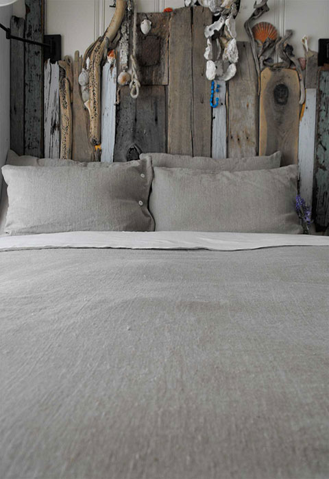
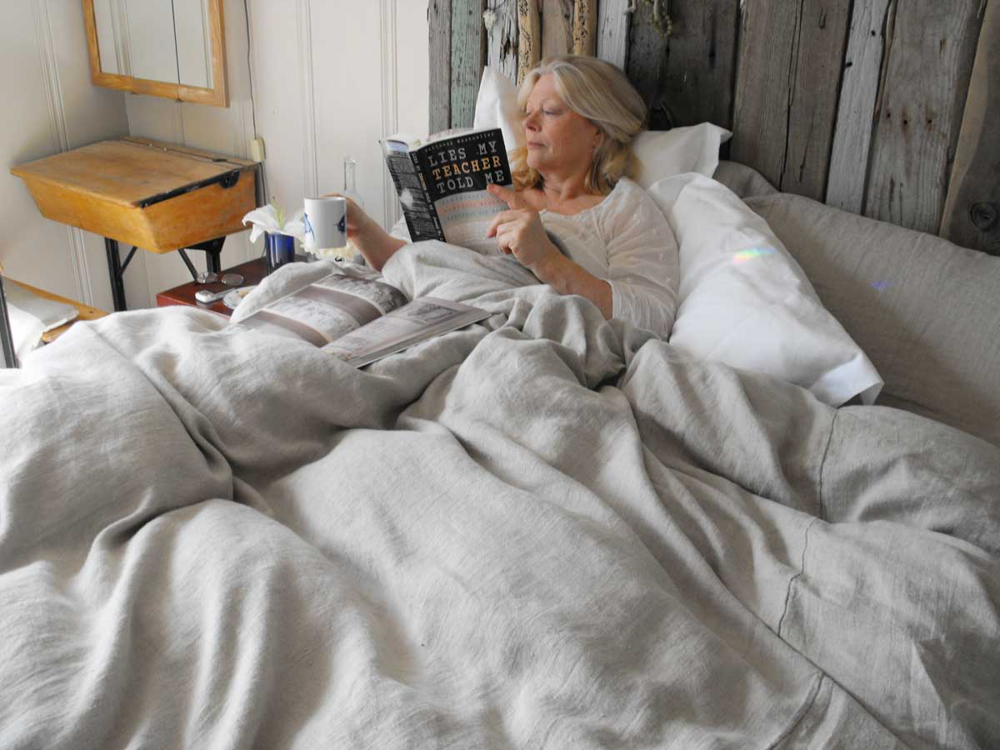
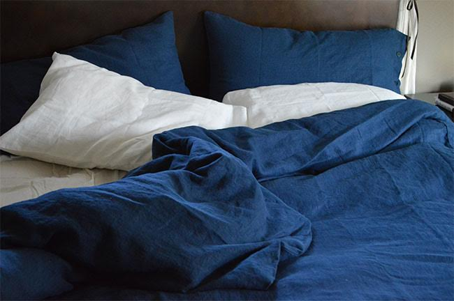
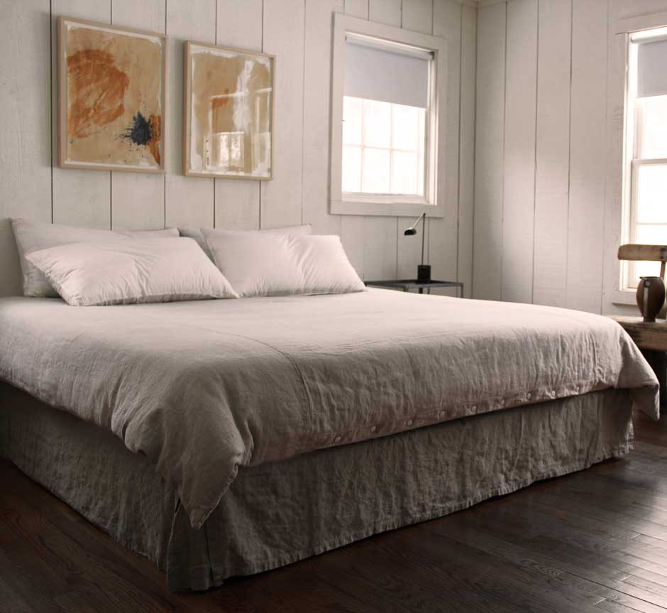
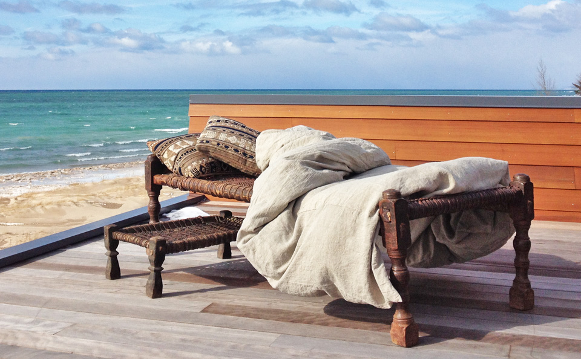
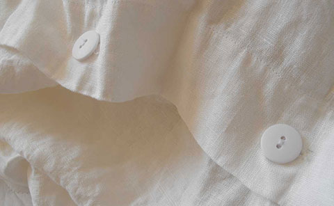
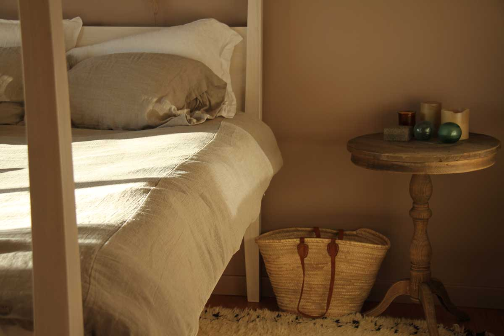
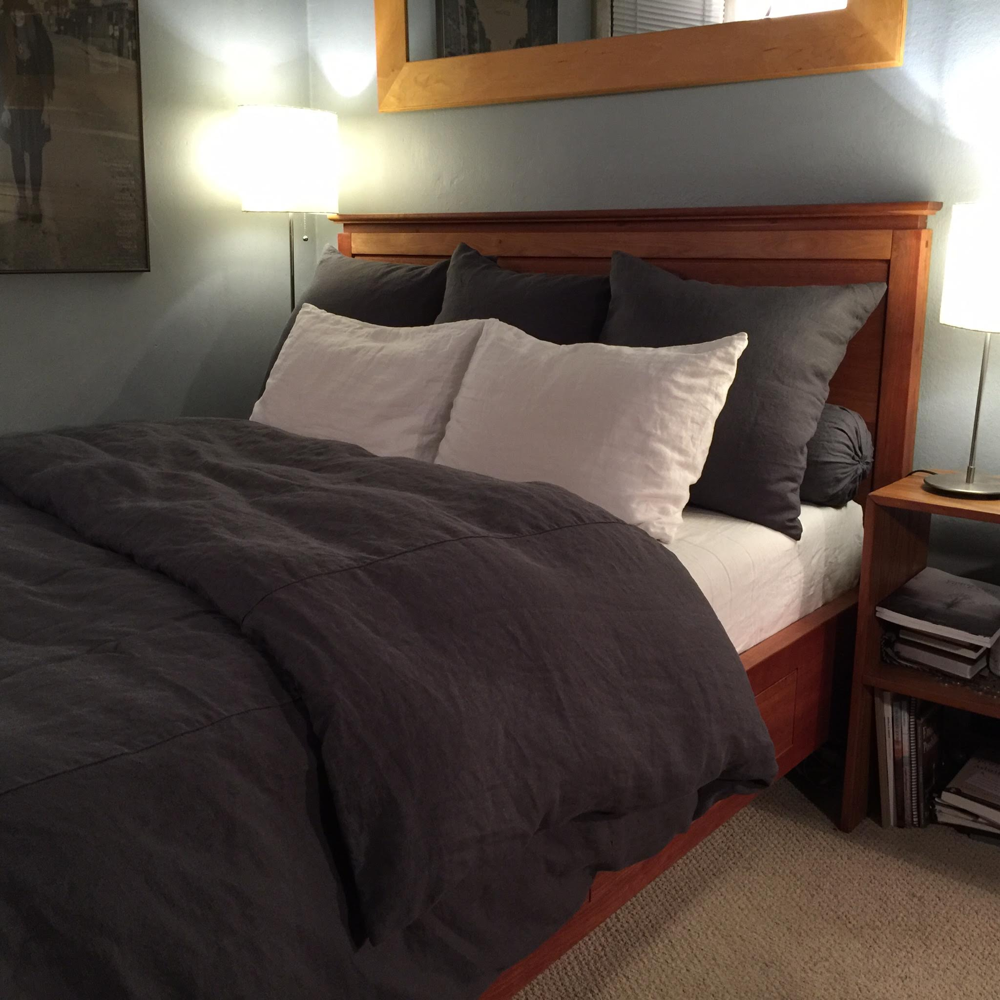

---
layout: default
title: Rough Linen Orkney Duvet Cover
---
<div id="product-main">
    <div id="product">
        <div>
            <a class="highslide" onclick="return hs.expand(this, config1 )" href="images/rough-linen-orkney-duvet-cover-driftwood-480x700.jpg" title="Tricia's bed, duvet cover, shams &#8212; this photo has been re-pinned over 10,000 times on Houzz"></a>
        </div>
        <div id="description">
            <h1>Orkney Duvet Cover</h1>
            <h2 class="alignRight">natural, white, black, charcoal, indigo</h2>
            <h3 class="alignRight">twin 68" wide x 88"  $285</h3>
            <h3 class="alignRight">queen 85" wide x 88"  $350</h3>
            <h3 class="alignRight">king 106" wide x 90"  $400</h3>
            <h3 class="alignRight">calking 106" wide x 98"  $410</h3>
            <div class="alignRight fine_print">coconut buttons extra</div>
            <div id="buy_button" class="floatright"><a href="https://store.roughlinen.com/orkney-duvet-cover-p60.aspx" title="add to basket">add to basket</a></div>
            <p class="clearBoth">The signature Orkney duvet cover, made from the linen that started it all. This was my first product &#8212; I sleep under it every night.</p>
            <p> Elemental &hellip; timeless, plain, natural linen woven on traditional single-width looms, three pieces joined with with minimum seams.</p>
            <p>The fabric begins with its own clean, crisp texture, softening with wear and washing to a silvery sheen.</p>
            <p> I added white, black, and now charcoal, and now indigo. The plainest of buttons, natural coconut shell or white, and black buttons for black and indigo covers. Invisible zippers (we call it 'the Architect's Version') for minimalists.</p>
            <p>A duvet cover should fit the infill snugly, up to 6" smaller all round to ensure that it doesn't shift. I have even put a king infill into a queen cover, with cosy results.</p>
            <br>
            <p>I also make duvet covers in <a href="rough-linen-st-barts-duvet-cover.html">St Barts</a> and <a href="rough-linen-smooth-duvet-cover.html">Smooth</a> linen.</p>
        </div>
        <!-- end description -->
    </div>
    <!-- end product -->
    
    <p><em>Le Patron Mange Ici</em> &#8212; well, not exactly eats here &#8212; but you get the idea</p>
    <div class="leftColumn">
        <div>
            <a class="highslide" onclick="return hs.htmlExpand(this, {objectType: 'iframe', width: 710, height: 460, allowSizeReduction: false, wrapperClassName: 'draggable-header no-footer', preserveContent: false, objectLoadTime: 'after'})" href="https://www.youtube.com/embed/-tBkWGp5krI?rel=0&amp;wmode=transparent&amp;autoplay=1" title="Choosing an infill for duvets, pillows, cushions and bolsters"></a>
            <p>Choosing an infill for duvets, pillows, cushions and bolsters</p>
        </div>
    </div>
    <!-- end leftColumn -->
    <div class="rightColumn">
        <div>
            <a class="highslide" onclick="return hs.htmlExpand(this, {objectType: 'iframe', width: 710, height: 460, allowSizeReduction: false, wrapperClassName: 'draggable-header no-footer', preserveContent: false, objectLoadTime: 'after'})" href="https://www.youtube.com/embed/1Dy2qZ7GBwE?rel=0&amp;wmode=transparent&amp;autoplay=1" title="Felix learns how to stuff a duvet cover from his mum"></a>
            <p>Felix learns how to stuff a duvet cover from his mum</p>
        </div>
    </div>
    <!-- end rightColumn -->
    
    <p>My indigo Orkney duvet, roughed up from a good night's sleep.</p>
    
    <p>Richard Ostell's Rough Linen Orkney duvet cover and bedskirt– I had forgotten how much I loved linen, but <strong><a href="http://richardostell.com/">Richard Ostell</a></strong>, a respected fashion and home designer, reminded me. The shots were from his home in Westchester County, N.Y. Rough woven linens graced his tables, windows and bed like a pure sigh of relief.
        <br> I got him on the phone.
        <br> &ldquo;I&rsquo;m calling to talk about our mutual love of linen,&rdquo; I said, breaking Rule No. 1 in journalism: Never show your bias.
        <br> &ldquo;I&rsquo;m not a fan of superfluous detail,&rdquo; he said, in a British accent that oozed refinement. &ldquo;I&rsquo;d much rather have something plain. Linen is honest, simple, humble, durable and has an element of having been touched by human hands.&rdquo;
        <br> The former creative director for Liz Claiborne, Ostell now has his own furniture and product design company. His work, whether in fashion or furnishings, reflects style that doesn&rsquo;t scream. His home whispers, &ldquo;I am here to comfort, not impress.&rdquo; It&rsquo;s a mantra more homes should adopt.
        <br> &ldquo;Linen is this great-looking fabric, so why don&rsquo;t we use it more?&rdquo; I ask.
        <br> &ldquo;I&rsquo;m puzzled by that, as well,&rdquo; he said. &ldquo;Possibly because it&rsquo;s naturally rumpled look gave it a reputation for being too casual. It got pigeonholed, but it can be very sophisticated. I think a lot of people don&rsquo;t understand what they can do with it.&rdquo;
        <br> &ldquo;I think it&rsquo;s the ironing,&rdquo; I say. &ldquo;All that pressing and starching. Who has time?&rdquo;
        <br> &ldquo;I never iron linen,&rdquo; he says.
        <br> &ldquo;Ever?&rdquo;
        <br> &ldquo;It defeats the point of it. The rumpled look is part of its beauty. I love it right when it comes out of the dryer fluffy. I don&rsquo;t think people should think it looks messy. It should be left as it is." – from <strong>Marni Jameson</strong>'s syndicated column</p>
    
    <p><em>"It is hard to express and even harder to believe that there is still some snow on the ground on April 11th along the shores of Lake Michigan. On the bright side, we can still snuggle under our winter weight comforter nicely enrobed by the Orkney natural duvet."</em> – <strong>Claire</strong></p>
    <div class="leftColumn">
        <p><em>"Sometimes you take a chance on something, and it works out incredibly well. This is one of those things. I bought the Orkney duvet cover and 2 slips (to check out whether I'd want sheets), and I love them. Just freaking love them. I get in bed and run my hands over the cover and think, 'You did a good thing here.'</em></p>
        <p><em>The infill fits perfectly and stays in place, even without securing it with clips or ties. It softens the room (mainly deep grays and steel and blacks). Needless to say, just a week after it arrived, I've ordered more slips and sheets.</em></p>
        <p><em>I am thrilled to get into bed and loath to leave it, and it's become a dating criterion (I would cut loose a potential partner before I cut loose this linen)."</em> – <strong>Hampton H.</strong> </p>
        <br>
        <p><em>"Hi Tricia &#8212; I never wrote to let you know how much I LOVE my bed linens &#8212; so beautifully made and luxurious to sleep on! I actually kept them folded and tied for a couple of months because I couldn't bear to use them &#8212; I'm over that! I am totally smitten with your products &#8212; Thank you for making them!"
        </em> – <strong>Deb</strong></p>
        <br>
        <div>
            <a class="highslide" onclick="return hs.expand(this, config1 )" href="images/rough-linen-orkney-white-duvet-cover-buttons-480x296.jpg" title="Rough Linen Orkney white duvet cover"></a>
            <p>Orkney white duvet cover</p>
        </div>
        <p><em>"So simple, yet very elegant. I've never had anything linen before except clothes, which I love. So to have such a luxurious duvet cover and shams makes me very happy!! Next order will be sheets, then extra pillow covers! One of everything please!"</em> – <strong>Kathleen</strong></p>
        <p><em>"My duvet cover is freakin' out of this world! As are all the Rough Linen products I have tried. I love how the duvet sits so perfectly inside the Orkney cover; no shifting at all! I basically blew my yearly vacation budget on a whack of Rough Linen and I can honestly say that i do not regret it-at all. Getting into bed every night is a little piece of heaven, but getting out each morning is hell!"</em> – <strong>Kat</strong> of Tottenhan, Ontario</p>
        <p><em>"I bought the duvet cover along with a sheet and two pillow slips. I don't usually splurge on things like bedclothes, but I am so glad that when I finally did, I did on these! I dream of my bed all day, and I pause to just look at it whenever I walk through the bedroom. It's a true aesthetic experience. Thank you so much for making such beautiful stuff!"</em> – Seattle, Washington</p>
        <p><em>"The Orkney duvet cover is as wonderful as described. It was promptly shipped and came beautifully wrapped. I can't decide what to order next!!"</em> – <strong>Nancy</strong> of Omaha, Nebraska</p>
    </div>
    <div class="rightColumn">
        <p><em>"Tricia,</em></p>
        <p><em>I received my duvet cover and pillow slips this afternoon. I washed them and dried them by air (it was a warm evening) and have been lounging in them tonight. They are absolutely wonderful.</em></p>
        <p><em>I fell in love with linen sheets on a voyage through in Sicily last year.They were used in many of my small hotels and I was so surprised how much more I enjoyed sleeping in linen over plain cotton.</em></p>
        <p><em>I managed to find a queen fitted sheet and two pillow cases in Italy, but no duvet cover or shams. So thank you for bringing me a little bit of Sicily here in SF! Now my bed is completely in linen and I am plum pleased. Thanks so much!</em></p>
        <p><em>Warmest regards,"</em> – <strong>Maia</strong></p>
        <div>
            <a class="highslide" onclick="return hs.expand(this, config1 )" href="images/jamie_bed_1200.jpg" title="Orkney natural duvet cover"></a>
            <p><a href="contrib/jamie/jamie.html">Jamie's</a> Orkney natural duvet cover</p>
        </div>
        <p><em>"The duvet cover is magnificent &#8212; I love it and can't thank you enough. it was immediately christinend by our 5# poodle/terrier who stole a corn cob which was twice the size of him, hah. What's great, is how forgiving Rough Linen is; the color along with the texture was no less for wear.</em></p>
        <p><em>Plus, I have a husband whom I have to strategically place anything of beauty as he's like a bull in a china shop &#8212; not with this duvet cover, thank you for making such a beautiful piece of art that I get to use and enjoy with him.</em></p>
        <p><em>Your crafstmanship and artistic abilities put FUN into Functional &#8212; this is one keepsake that I'll get to enjoy in my daily life and handdown after I'm gone (not like damn Waterford that just sits, or gets used once a year; maybe I should start using it daily, hummm&hellip;</em></p>
        <p><em>I'd love to slip cover my world with your Rough Linen!</em></p>
        <p><em>Thanks again,"</em> – <strong>Deb</strong></p>
        <br>
        <p><em>"They got it totally right. No superfluous tricks or over embellishments. The natural characteristics of the fabric say everything. Well done!"</em> – <strong>Abel</strong></p>
        <br>
        <p><a href="https://store.roughlinen.com/duvet-cover-orkney-p60.aspx?ShowReviews=True"><strong>See more Orkney duvet cover reviews</strong></a></p>
    </div>
    
    <p>Rough Linen Orkney natural duvet on the shores of Lake Michigan &#8212; photo courtesy of Rough Linen customer Claire</p>
    
    <p>Wow! That just about sums up my feelings right now. I can’t believe how quickly you fulfilled my custom order, especially after the Black Friday rush! My new bedding was beautifully packaged and waiting for me when I returned home last night from a long week across the country for business.</p>
    <p>Although I was dog-tired by the time I got to my house, I wasn’t about to go to sleep without trying out my new linens, and they are everything I had hoped for. I’m so glad I finally took the plunge and ordered them.</p>
    <p>Here is a photo of the finished product&colon; a <a href="https://roughlinen.com/rough-linen-orkney-duvet-cover.html">charcoal Orkney duvet cover</a>, <a href="https://roughlinen.com/rough-linen-sham.html">Euro shams</a>, and <a href="https://roughlinen.com/rough-linen-bolster.html">bolsters</a>, along with my existing <a href="https://roughlinen.com/rough-linen-sheet.html">Strong White sheet</a> and <a href="https://roughlinen.com/rough-linen-pillow-slip.html">pillow slips</a>.
    </p>
    <p>I love the way the charcoal linen contrasts with the creamy white sheets and the deep, rich glow of the cherry on the bed that my father and I handcrafted a few years ago; they complement each other perfectly. I slept so well last night—it was quite a warm welcome home! The only problem is that now I want to stay in bed all day. :-)</p>
    <p>Thank you, Tricia, for your incredible customer service, your outstanding craftsmanship, and the care you put into everything you do. It is definitely noticed and much appreciated.</p>
    <p>Your customer for life,
        <br /> Chad
    </p>
</div>
<!-- end product-main -->
